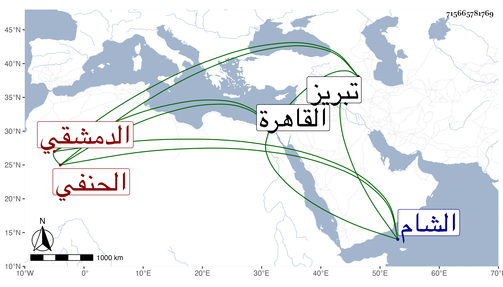

0902Sakhawi.DawLamic.ITO20230111-ara1.EIS1600.715665781769
Biography ID: 715665781769
540
محمود بن أحمد بن إسماعيل بن محمد بن أبي العز المحيوي بن النجم بن العماد الدمشقي الحنفي والد الشهاب أحمد ويعرف كسلفه بابن الكشك اشتغل قليلا وناب عن أبيه بل استقل بالقضاء وقتا ولما كانت فتنة تمر دخل معهم في المنكرات والمظالم وبالغ فيها وولي القضاء عنهم ولقب قاضي المملكة واستخلف بقية القضاة من تحت يده وخطب بالجامع فكرهه الناس ومقتوه ولم يلبث أن اطلع تمر على أنه خانه فصادره وعاقبه وأسره إلى أن وصل تبريز فهرب ودخل القاهرة فكتب توقيعه بقضاء الشام فلم يمضه نائبها شيخ واستمر خاملا حتى مات في ذي الحجة سنة ثمان بعد أن كان تفرق أخوه وأولاده وظائفه ثم صالحوه على بعضها ذكره شيخنا في إنبائه .
